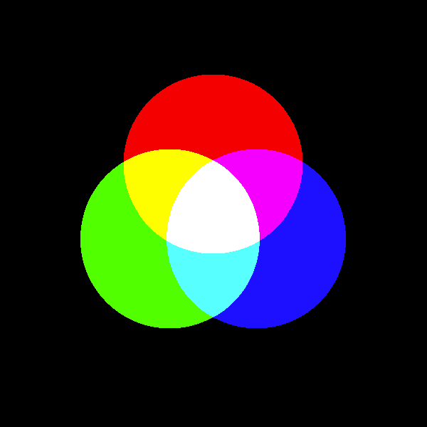

00 — Getting Started: How Computer Graphics Work
Colour models: RGB
A screen pixel produces colour by mixing coloured light — specifically, by combining red, green
and blue light at different intensities. This is why RGB (Red, Green, Blue) is the standard
way to describe colour on screens, and it's the colour model p5 uses by default. Each channel is a
number from 0 (none of that colour) to 255 (as much as possible):
fill(255, 0, 0); // pure red
fill(0, 255, 0); // pure green
fill(0, 0, 255); // pure blue
fill(255, 255, 0); // red + green light mixed = yellow
fill(255, 255, 255); // all three at full strength = white
fill(0, 0, 0); // none of any colour = blackThis is called an additive colour model, because colours are built by adding light together — starting from black (no light at all) and adding red, green and blue light gets you toward white. It matches how a screen physically works: each pixel is made of tiny red, green and blue light-emitting elements, and what you see is those three lights blending together at a distance.

Figure: three overlapping circles of red, green and blue light, with their pairwise overlaps showing yellow, magenta and cyan, and the centre where all three overlap showing white — the classic RGB additive mixing diagram.